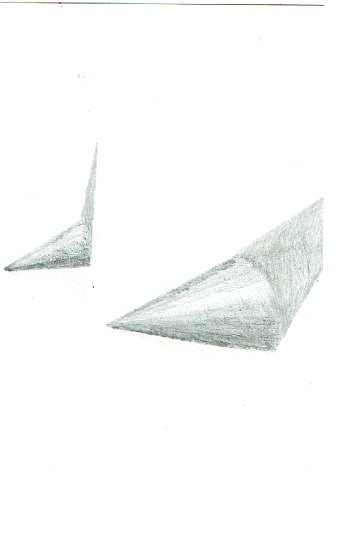
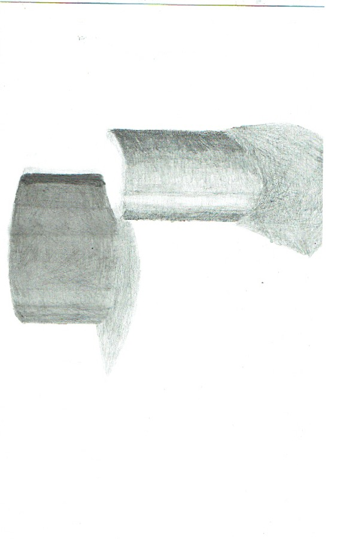
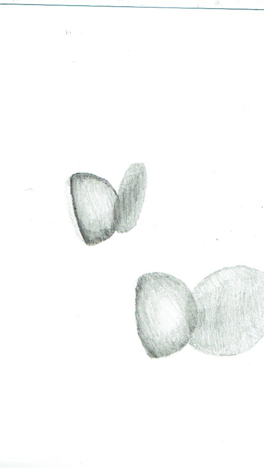
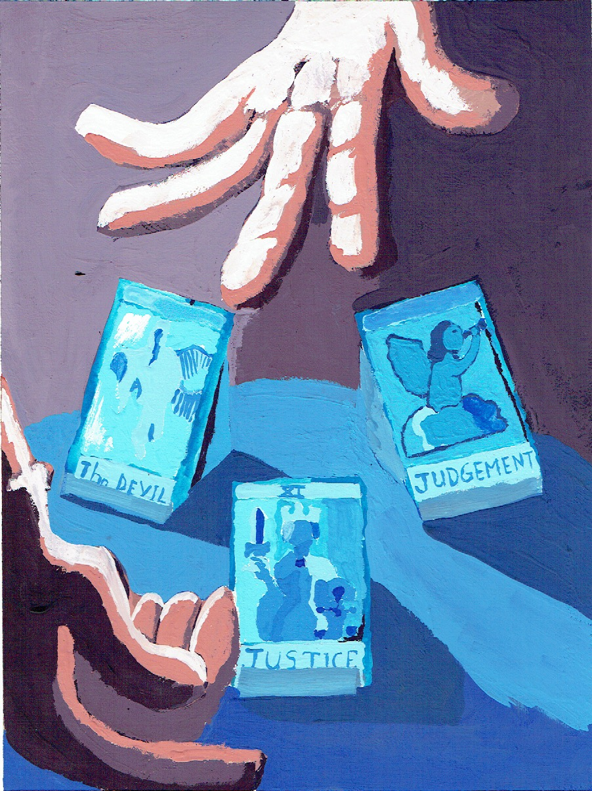
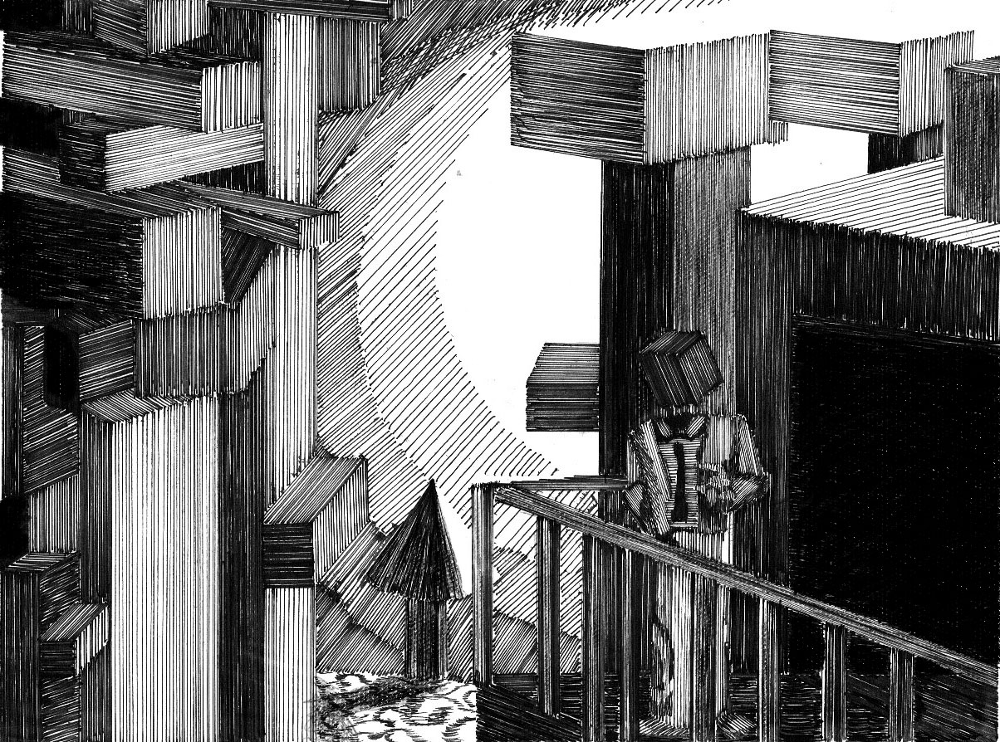
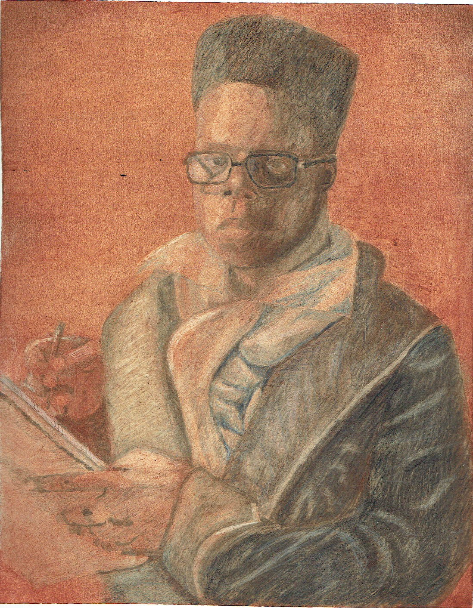

Running out of time the clocks titcking and I have to write something about part one of four shape studys.
Part two here you go this is a tringle/cone and I was trying to caputer the shadow of this piece.
part three something went wrong here I don't know what it's supposed to be a soda-can and the perspective just hurts me.
part four the circle or ball if you want to get the idea of what I tride to do here.
Hands that was the name of this project and what we had to do in the theme of forution telling and something happen I may go back and fix it in a later date.
This is how I see the world made of blocks and we had to build a great landscape that captures the world around us. In short I was playing Minecraft at the time and may have been a little box heavy.
paint your parttern. So, I painted my partten to the best of my abiltys thank you very much.